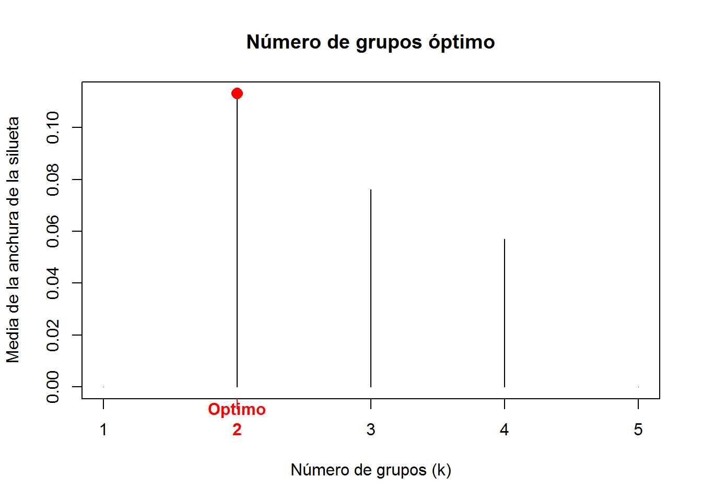
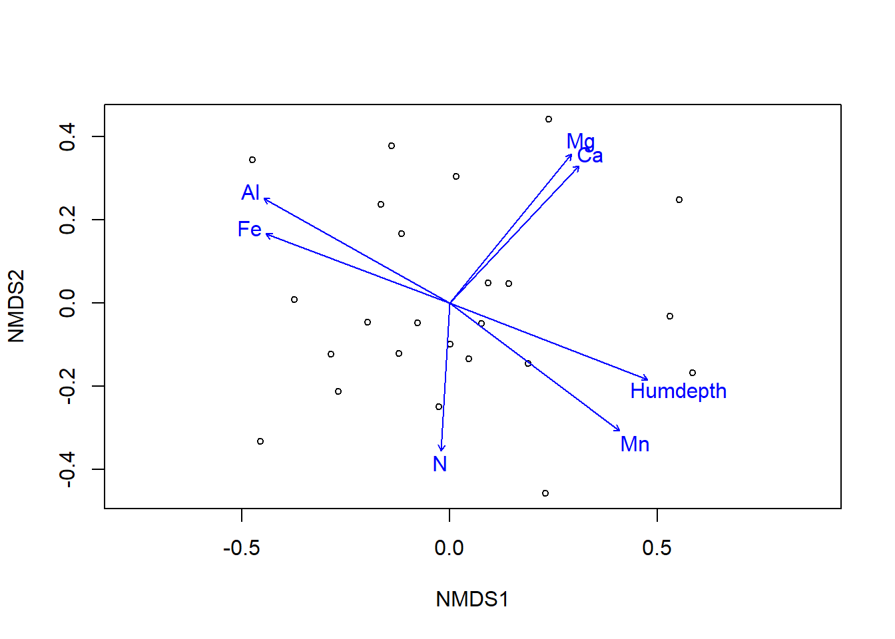

Capítulo 2 Análisis multivariado de la composición de la comunidad
Los índices de similitud nos permiten comparar las comunidades entre dos sitios, pero claramente cuando estudiamos las comunidades nuestros datos no son tan sencillos como lo que hemos utilizado hasta el momento. El organizar los datos de composición de la comunidad y poder interpretarlos en relación a otras comunidades, entender que comunidades son más similares entre sí, y saber si esta similitud o distancia es el resultado de unas respuestas al entorno pueden ser algunas de las cosas que podremos responder utilizando las técnicas de análisis multivariado de la comunidad. A continuación vamos a describir algunas técnicas de clasificación y ordenación que nos permitirán abordar estas temáticas.
Las técnicas de ordenación y clasificación son estrategias alternativas para simplificar los datos. La ordenación intenta simplificar los datos en un mapa que muestra las similitudes entre los puntos. La clasificación simplifica datos colocando los puntos similares en una misma clase o grupo Oksanen 20141.
Utilizaremos el paquete Vegan para los análisis de ordenación y clasificación, para mayor información puede referirse a Oksanen 20132.
2.1 Agrupamiento Jerárquico (Hierarchic Cluster)
A continuación vamos a realizar un análisis Cluster (análisis de conglomerados) utilizando la función hclust del paquete vegan. La función hclust necesita una matriz de disimilitudes como entrada. El Análisis de conglomerados intenta generar conglomerados que tengan la máxima homogeneidad en cada grupo y la mayor diferencia entre los grupos.
Aunque la función dist nos permite calcular disimilitudes, para el análisis de comunidades biológicas utilizaremos la función vegdist del paquete vegan. Esta función nos permite calcular varios índices de disimilitud. El método de cálculo de la disimilitud por defecto es Bray-Curtis (“bray”).
Una de las características importantes del método Bray-Curtis es que varía entre 0 y 1, dos comunidades que no comparten ninguna especie tendrían 1 como resultado.
Calculemos una matriz de disimilitudes usando el método Bray-Curtis, utilizaremos los datos de Barro Colorado Island (BCI) cargados en el paquete vegan. Para eso necesitamos cargar el paquete y los datos de BCI, únicamente utilizaremos los datos de los primeros 10 sitios.
library(vegan)
data(BCI)
dist<- vegdist(BCI[1:10,], method="bray")
dist[1:10]## [1] 0.2706682 0.3501647 0.3682008 0.3725079 0.3744186 0.3518519 0.3424346
## [8] 0.4235706 0.3770140 0.2873051Podemos ver que el sitio 1 es 27% diferente al sitio 2, 35% al sitio 3, 36% al sitio 4 y así sucesivamente con los 10 sitios.
Con la matriz de disimilitudes calculada se puede analizar los puntos que conforman una agrupación. Utilizaremos los métodos de agrupación de la función hclust que nos propone tres métodos de agrupamiento: agrupación simple, agrupación completa y agrupación promedio.
Todos los métodos inician con el agrupamiento de las dos comunidades (dos sitios) más similares y a partir de esta primera comparación se continúa con el resto de puntos.
A continuación ejemplificaremos el cálculo de las distancias usando los tres métodos. Extraemos los cinco primeros sitios de la matriz de BCI y generamos un nuevo objeto (S_BCI). Con este nuevo objeto calculamos la distancia entre los cinco sitios.
S_BCI<- BCI[1:5,]
dist1<- vegdist(S_BCI, method="bray")
dist1## 1 2 3 4
## 2 0.2706682
## 3 0.3501647 0.2873051
## 4 0.3682008 0.3149523 0.3244078
## 5 0.3725079 0.3851064 0.3595041 0.3721619En base de la matriz de disimilitudes se busca el par de puntos que se encuentren más cercanos (menos disimiles). En nuestro caso el punto 1 y 2 tienen la distancia más baja 0.27. Una vez identificado, inicia el proceso de agrupación y es donde se diferencian los tres métodos.
Con el primer grupo generado debemos comenzar la construcción del resto de grupos, para esto construimos una nueva matriz de disimilitud calculando las distancias desde este primer grupo (1-2) al resto de sitios. El cálculo de esta distancia es dependiente del método.
Recuerde, para los sitios del 3 al 5 tendremos dos distancias, la distancia desde el sitio 1 y del sitio 2 a cada uno de estos sitios. Por tanto utilizaremos estas dos distancias para calcular la distancia desde el grupo.
- En el método de agrupación simple la distancia entre el grupo y el sitio 3 será igual a la distancia más baja comparando entre la distancia del sitio 1 y el sitio 2. En el caso de la distancia al sitio 3 el valor mínimo es 0.287.
- En el método completo el nuevo valor de distancia será el valor más alto, en este caso 0.350, y
- En el método de agrupación promedio, obtenemos el valor promedio entre las distancias primer grupo y el sitio 3 en este caso 0.318 (Tabla 1).
Tabla 1. Cálculo de nuevas distancias entre el grupo 1 (sitio 1 y 2) y los sitios restantes. A. simple: cálculo de distancia mediante el método de agrupación simple. A. completa: cálculo de distancia mediante el método de agrupación completa. A. promedio: cálculo de distancia mediante el método de agrupación promedio.
| Sitios | Sitio 1 | Sitio 2 | A. Simple | A. Completa | A. Media |
|---|---|---|---|---|---|
Sitio 3 |
0.3501647 |
0.2873051 |
0.2873051 |
0.3501647 |
0.3187349 |
Sitio 4 |
0.3682008 |
0.3149523 |
0.3149523 |
0.3682008 |
0.3415765 |
Sitio 5 |
0.3725079 |
0.3851064 |
0.3725079 |
0.3851064 |
0.3788071 |
- A partir de estos cálculos se construye nuevamente la matriz de distancia. Mostramos las nuevas matrices de distancias según el método de agrupación utilizado.
Para el método de agrupación simple
| Sitio | Grupo1-2 | Sitio 3 | Sitio 4 |
|---|---|---|---|
3 |
0.2873051 |
||
4 |
0.3149523 |
0.3244078 |
|
5 |
0.3725079 |
0.3595041 |
0.3721619 |
Para el método de agrupación completo
| Sitio | Grupo1-2 | Sitio 3 | Sitio 4 |
|---|---|---|---|
3 |
0.3501647 |
||
4 |
0.3682008 |
0.3244078 |
|
5 |
0.3851064 |
0.3595041 |
0.3721619 |
Para el método de agrupación promedio
| Sitio | Grupo1-2 | Sitio 3 | Sitio 4 |
|---|---|---|---|
3 |
0.3187349 |
||
4 |
0.3415765 |
0.3244078 |
|
5 |
0.3788071 |
0.3595041 |
0.3721619 |
- Se repite el procedimiento, se busca los puntos que tienen la menor disimilitud en la nueva matriz y se vuelve a calcular las distancias desde este nuevo grupo al resto de grupos, esto se repite tantas veces hasta que todos los sitios están asociados.
Podemos calcular directamente la agrupación utilizando la función hclust, y graficarlo con la función plot.
par(mfcol=c(1,3))
csim <- hclust(dist1, method="single")
ccom <- hclust(dist1, method="complete")
cpro <- hclust(dist1, method="average")
plot(csim, cex.axis=0.7)
plot(ccom, cex.axis=0.7)
plot(cpro, cex.axis=0.7)Figure 2.1: Dendrograma construido a partir de los 3 métodos de agrupación
Como podemos ver en la figura 2.1 en todos los casos el primer grupo es el mismo, el grupo entre los sitios 1 y 2 con una disimilitud de 0.27, a partir de este punto los dendrogramas varían según el método utilizado. En el caso del método simple la disimilitud más baja es entre el grupo 1-2 y el sitio 3, con una disimilitud del 0.287. En el caso del método completo la disimilitud más baja se da entre el sitio 3 y 4 que conforman un segundo grupo con una disimilitud de 0.32. Finalmente, en el caso del método de promedio la menor disimilitud se da entre el grupo 1-2 y el sitio 3 con una disimilitud de 0.31 (Figura 2.1)
Los métodos de agrupamiento jerárquico (cluster) producen clasificaciones donde todas las observaciones se encuentran agrupadas de diferente forma. En los extremos todas las observaciones se encuentran agrupadas en una sola clase o cada observación conforma su clase privada, entre estos extremos las observaciones forman diferentes agrupamientos con niveles de disimilitud variables. Normalmente nos interesa tener un cierto número de clases con niveles de disimilitud establecido. La conformación de estos grupos se puede mostrar visualmente con función rect.hclust (Figura 2.2)
par(mar=c(2,3,4,2))
plot(ccom, hang=-0.1, cex.axis=0.7, cex.lab=0.8, cex.main=0.8)
rect.hclust(ccom, 3)Figure 2.2: Dendrograma con número de grupos
Ahora podríamos obtener la pertenencia a un grupo y relacionarlo con otra variable explicativa, y analizar si la genración del grupo responde a algún factor.
grupo <- cutree(ccom, 3)
grupo## 1 2 3 4 5
## 1 1 2 2 32.2 Interpretando el cluster
El análisis de conglomerados (cluster) no es un test estadístico, y como vimos hay varios factores que pueden afectar la generación de los grupos (Borcard, Gillet, and Legendre 2011), por lo que debemos ser consientes de lo que obtenemos como resultado. POdemos usar la función summary() para ver la información que tenemos luego de haber utilizado el hclust, estos datos pueden ser utilizados para interpretar el agrupamiento (Borcard, Gillet, and Legendre 2011).
Como vimos anteriormente el investigador puede decidir, en función de su experiencia y de los arboles generados, cuantos grupos se generan dentro del árbol y que metodo de agrupamiento utilizar, sin embargo, podemos utilizar algunas funciones que nos permitan determinar grupos consistentes.
2.2.1 Elegir la función de enlace
Una forma que podemos utilizar para definir los grupos es la distancia Cofenética. Esta distancia es calculada como la distancia entre dos objetos de un mismo grupo en el dendrograma, la distancia desde el primer objeto al segundo objeto pasando por el nodo de unión de los dos objetos es la distancia Cofenética. Una matriz cofenética es una matriz que representa las distancias cophenéticas entre todos los pares de objetos. Con esta matriz podemos correlacionar con la matriz de disimilitud original. El método con la correlación cofenética más alta puede ser vista como la que produjo el mejor modelo de agrupación para la matriz de distancia.
#Calculamos la matriz cofenética para cada método de
#agrupamiento
csim_coph <- cophenetic(csim)
cpro_coph <- cophenetic(cpro)
ccom_coph <- cophenetic(ccom)
#Calculamos la correlación
cor(csim_coph, dist1); cor(cpro_coph, dist1);cor(ccom_coph, dist1)## [1] 0.8143114## [1] 0.846916## [1] 0.7487461Según estos datos el método promedio es el método que produce un mejor agrupamiento.
Otra forma de evaluar el mejor método es calcular la distancia de Gower, calculado como la suma de los cuadrados de la diferencia entre la matriz de distancia y la distancia Cofenética, el menor valor significa que es el mejor método de agrupamiento.
sim_gow <- sum((dist1-csim_coph)^2)
pro_gow <- sum((dist1-cpro_coph)^2)
com_gow <- sum((dist1-ccom_coph)^2)
sim_gow; pro_gow; com_gow## [1] 0.007860928## [1] 0.003917673## [1] 0.01068659En este caso vemos que la decisión usando la distancia de Gower y la Cofenética es la misma, el método promedio produce el mejor agrupamiento. Sin embargo, no siempre el resultado es consistente entre los dos métodos.
Este proceso nos ha permitido obtener la mejor función de enlace, sin embargo, para definir cuales son los subconjuntos de datos (tener un punto de corte) se puede utilizar algunas otras herramientas.
2.2.2 Elegir el punto de corte
Como vimos anteriormente yo puedo definir un punto de corte para generar los grupos o puedo decidir cuantos grupos, sin embargo, este procedimiento es subjetivo. Podemos utilizar alguna información que nos permita tomar decisiones fundamentadas.
Podemos utilizar la silhouette width (anchura de la silueta) para medir el grado de pertenencia de un objeto a su agrupación, basado en la distancia media entre este objeto y todos los objetos de la agrupación a la que se pertenece, en comparación con la misma medida calculada para el siguiente grupo más cercano (Borcard, Gillet, and Legendre 2011). Utilizaremos la función siluette del paquete cluster. La salida de esta función varía entre 1 y -1. Los valores negativos significan que los objetos correspondientes probablemente se han colocado en un grupo erróneo.
A continuación el proceso utilizado:
library(cluster)
#Generamos un vector vacío para colocar los valores
# medios de la anchura de la silueta (mas)
mas <- numeric(nrow(S_BCI))
#Calculamos y ponemos el <mas> en el vector generado
for( k in 2: (nrow(S_BCI)-1)){
sil <- silhouette(cutree(ccom, k=k), dist1)
mas[k] <- summary(sil)$avg.width
}
# Analizamos cual es el mejor punto de corte
k.best <- which.max(mas)
# Graficamos
plot(1:nrow(S_BCI), mas, type = "h", main="Número de grupos óptimo",
xlab = "Número de grupos (k)", ylab="Media de la anchura de la silueta")
axis(1, k.best, paste("Optimo", k.best, sep="\n" ),
col="red", font=2, col.axis="red")
points(k.best, max(mas), pch=16, col="red", cex=1.5)
cat("", "Número óptimo de grupos k=", k.best, "\n",
"Con un valor medio de anchura de la silueta de", max(mas), "\n")## Número óptimo de grupos k= 2
## Con un valor medio de anchura de la silueta de 0.1130222A partir de este punto podría utilizar otras herramientas para definir el número de grupos. Ahora nos interesa saber si los grupos están balanceados y bien delimitados. Podemos utilizar el gráfico de la silueta
k<- 2
cutg <- cutree(ccom, k=k)
sil <- silhouette(cutg, dist1)
sil.o <- sortSilhouette(sil)
rownames(sil.o) <- row.names(S_BCI)[attr(sil.o, "iOrd")]
plot(sil.o, main= "Gráfico de silueta", cex.names = 0.8,
col = cutg+3, nmax.lab=100)
Al parecer no ha sido el mejor ejemplo, sin embargo, podemos ver que los 2 grupos han sido consistentes. Vamos a probar con nuevos datos.
2.3 Ejercicio 2: Análisis de clasificación
Con el fin de determinar si existen agrupamientos de herbaceas dentro de una parcela permanente de 9ha en la Reserva Ecológica Arenillas realizaremos un análisis de Agrupamiento (Cluster).
Para esto disponemos de una matriz con datos de la composición de la comunidad que puede ser descargado aquí.
Los datos corresponden a un levantamiento de la vegetación de herbáceas en 4 tiempos distintos; final de invierno (abril 2012), estación seca (noviembre 2012), inicio del invierno (diciembre 2012), invierno (enero 2013). Se levantaron 4 cuadrantes de 0.5x0.5 m en cada vértice y centro de la parcela permanente de 9 hectáreas (113 muestras).
Con estos datos:
Calcular una matriz de disimilitud utilizando la distancia de Bray-Curtis.
Definir la mejor función de enlace para los tres métodos.
Definir usando la función silhouette cuantos grupos deberían generarse.
Realizar un gráfico del cluster y mostrar los grupos con la función rect.hclust
Evaluar si los grupos obtenidos responden a alguna de las variables de especies leñosas
Graficar las coordenadas “x” y “y” de las parcelas y colorear cada punto de acuerdo al grupo al que pertenece. Esto nos permitirá identificar si existe un patrón espacial en la generación de los grupos.
Bibliografia
Borcard, Daniel, Francois Gillet, and Pierre Legendre. 2011. Numerical Ecology with R. doi:10.1007/978-0-387-78171-6.